Before the butterflies
Ternyata pernah bertemu lebih dulu
Waktu pelayanan promosi, kita sebenarnya sudah pernah ada di satu cerita yang sama. Belum tahu saja kalau nanti kamu akan jadi seseorang yang begitu berarti.
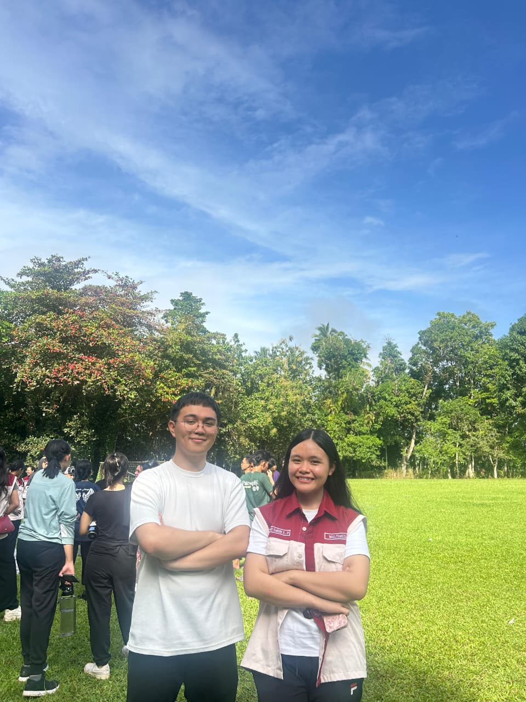
15 • 09 • 2026
Ada hadiah kecil dari seseorang yang sayanggg sekali sama kamu.
Psst… nyalakan suaranya ya ♫
Chapter twenty begins
Hari ini dunia merayakan dua puluh tahun kamu hadir. Aku merayakan satu hal lagi: betapa beruntungnya aku bisa mengenal dan mencintai kamu.
Lihat cerita kita ↓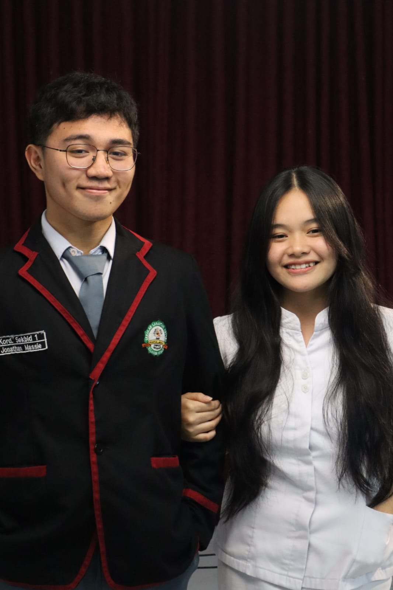
my favorite person, always ♡
The story so far
Before the butterflies
Waktu pelayanan promosi, kita sebenarnya sudah pernah ada di satu cerita yang sama. Belum tahu saja kalau nanti kamu akan jadi seseorang yang begitu berarti.

And then, MPLS
Entah sejak kapan, melihat Vell mulai terasa berbeda. Dari sekadar kenal, pelan-pelan ada rasa nyaman yang tidak bisa dijelaskan dengan biasa.
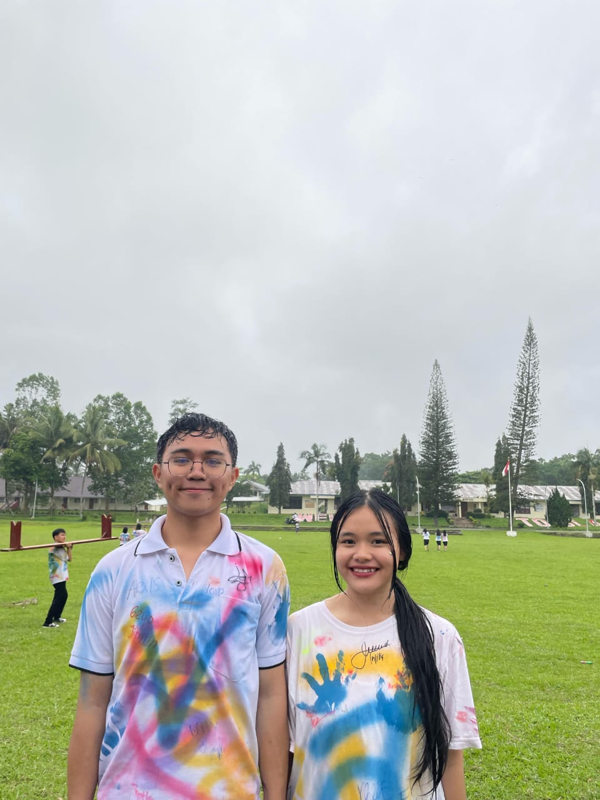
Our silly little moment
Awal-awal sleepcall, kamu senang sekali sampai heboh sendiri. Lucu, random, dan sekarang jadi salah satu memori kecil yang selalu bikin senyum. Wkwkw.
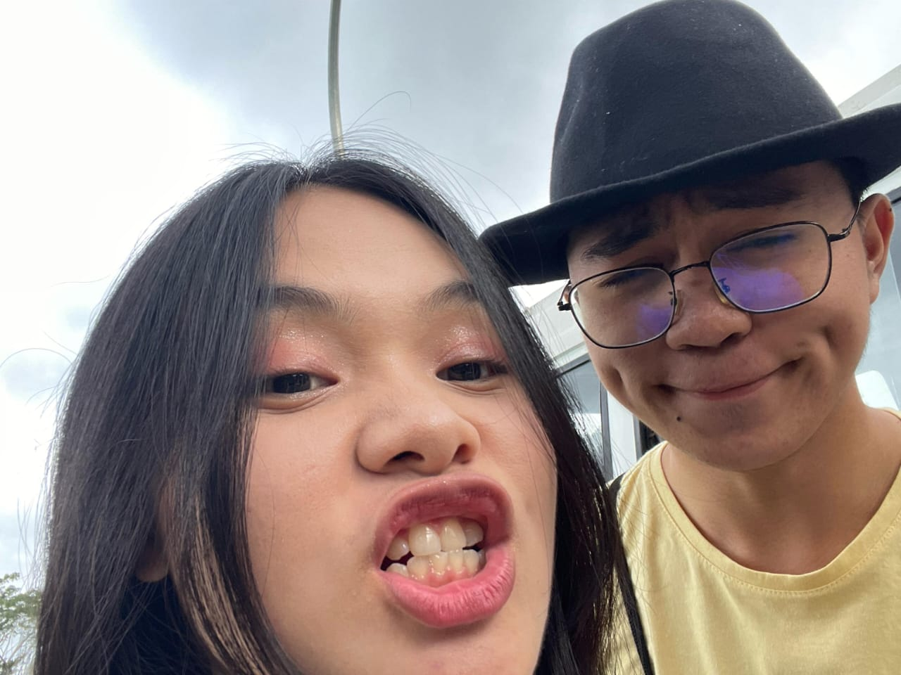
little moments, big feelings
Geser fotonya—karena cerita kita terlalu manis kalau cuma ditaruh satu frame.
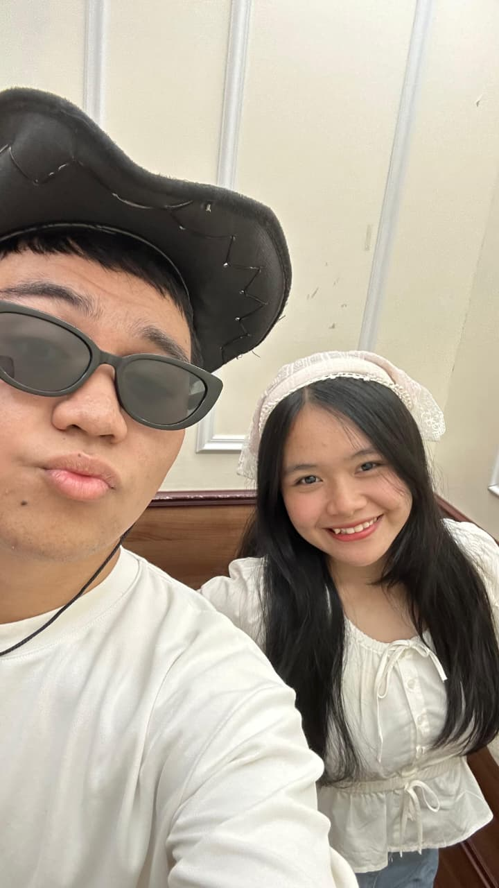
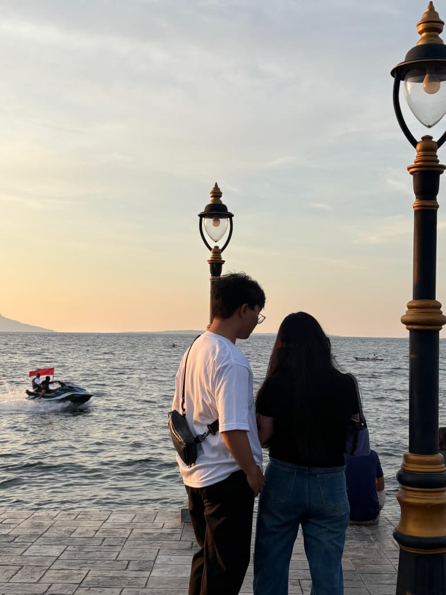
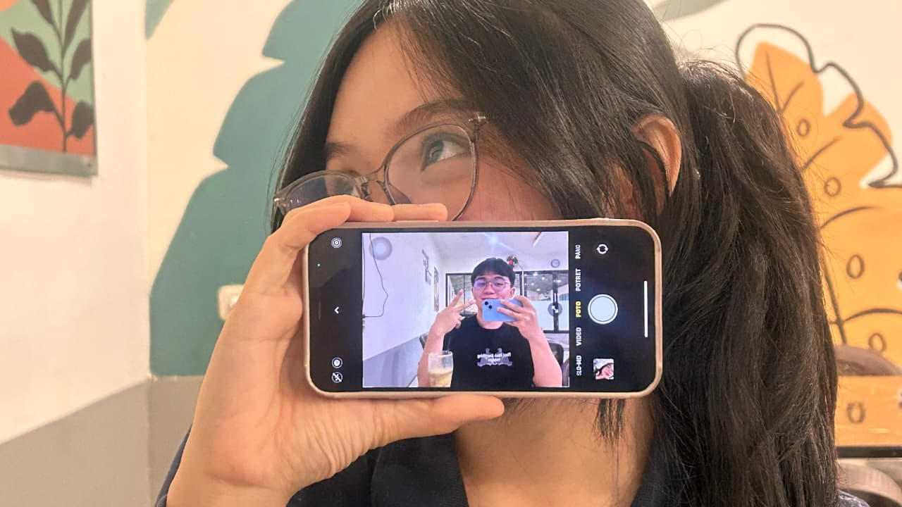
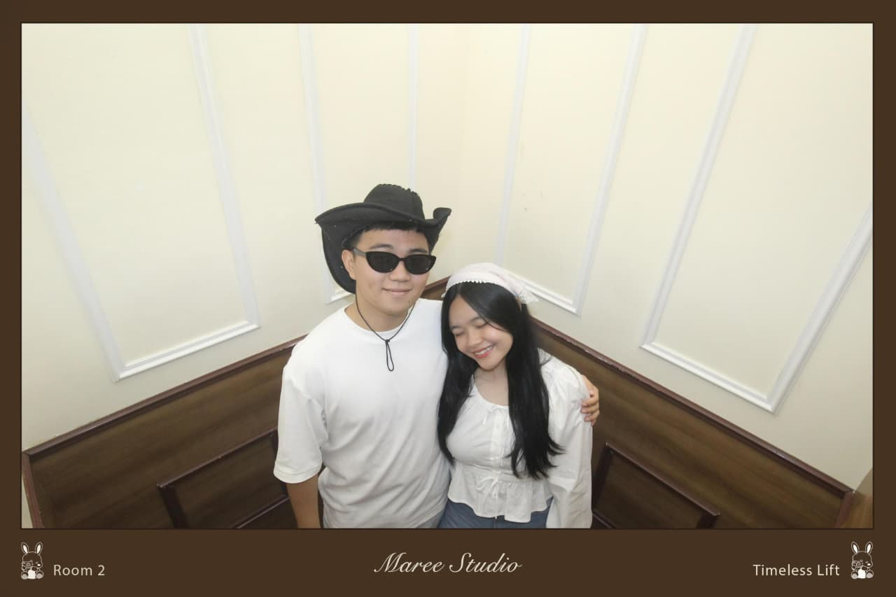
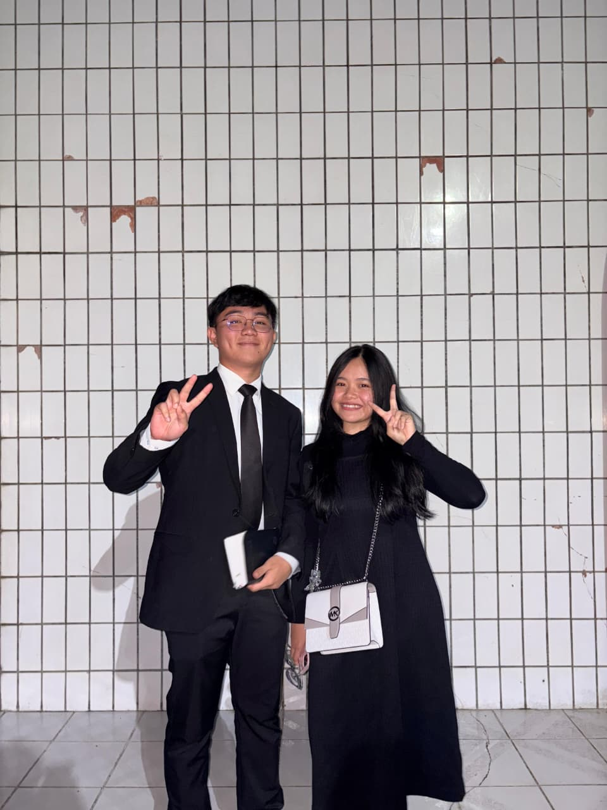
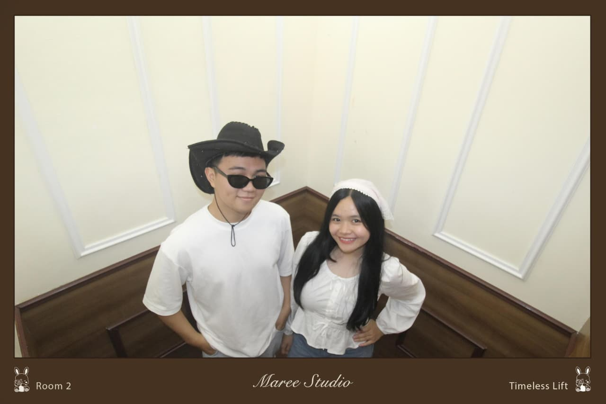
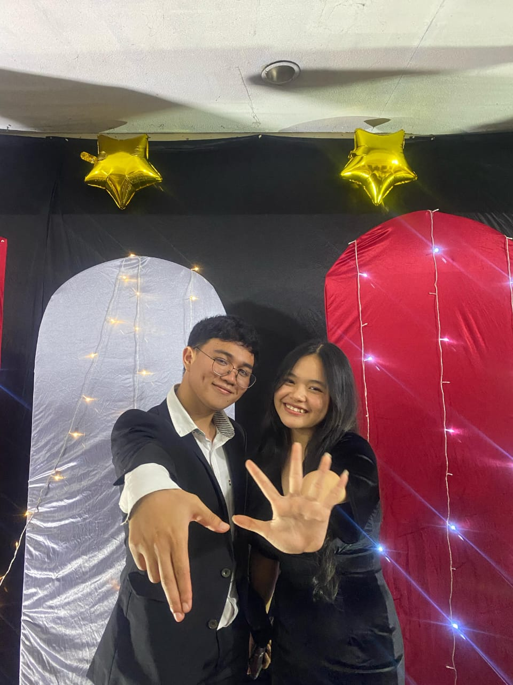
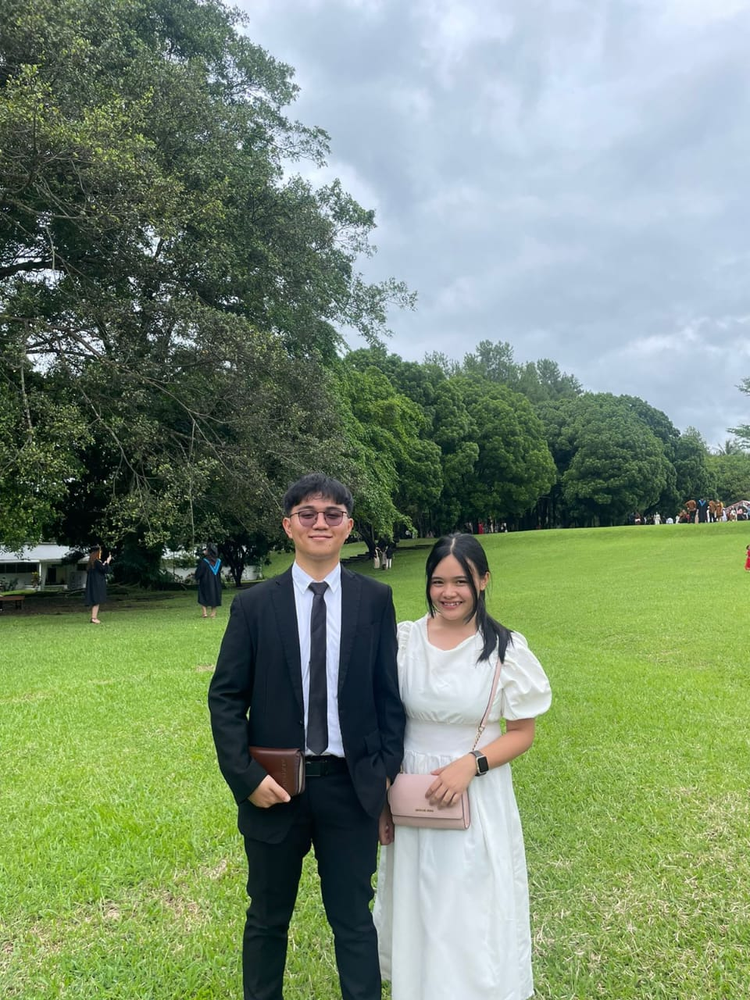
← drag to remember →
Things I know for sure
Sentuh satu-satu. Aku bisa menyebutkannya seharian, tapi kita mulai dari tujuh dulu.
If you ever wonder why
Karena Vell memang cocoknya disayang.
Karena sekuat apa pun Vell, pasti ada sisi lemah yang butuh seseorang.
Karena Vell bisa membuat hati Joma tenang.
Karena buat aku, Vell adalah segalanya.
A tiny mission for the birthday girl
Ada lima hati kecil yang kabur karena malu. Tangkap semuanya untuk membuka pesan rahasia.
Semua hatinya dari awal memang selalu pulang ke Vell. ♡
One last thing
Klik amplopnya ketika Vell sudah siap.
15 September 2026
Hari ini aku bukan cuma bersyukur karena kamu bertambah satu tahun, tapi juga karena Tuhan mengizinkan aku mengenal dan mencintai seseorang seperti kamu.
Terima kasih karena sudah menjadi seseorang yang selalu punya tempat spesial di hatiku. Dari banyaknya orang yang bisa aku temui, aku bersyukur Tuhan mempertemukan aku dengan kamu. Aku mungkin nggak selalu bisa mengungkapkannya dengan sempurna, tapi aku benar-benar sayang sama kamu.
Di ulang tahunmu ini, aku berdoa semoga Tuhan selalu menjaga langkahmu, memberikan kesehatan, sukacita, hikmat, dan kekuatan dalam setiap proses yang kamu jalani. Semoga setiap impian yang baik dalam hatimu Tuhan tuntun satu per satu, dan ketika jalanmu terasa berat, semoga kamu selalu ingat bahwa Tuhan tidak pernah meninggalkanmu.
Aku juga berdoa supaya hubungan kita terus menjadi sesuatu yang membawa kita semakin dekat kepada Tuhan, bukan hanya semakin dekat satu sama lain. Kalau Tuhan berkenan, semoga aku bisa terus berada di sampingmu—menemani, mendukung, mendoakan, dan mencintaimu dalam setiap musim kehidupan.
Happy birthday, beautiful.
May God bless your new chapter abundantly.
And may I be one of the reasons you smile a little more this year. ❤️
I love you, always.
— Sandroo
Before this story ends…
Semoga tahun ini dipenuhi doa yang terjawab, pelukan yang menenangkan, dan cinta yang selalu terasa seperti pulang.
With all my love, Sandroo ♡